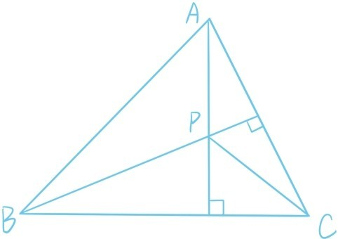
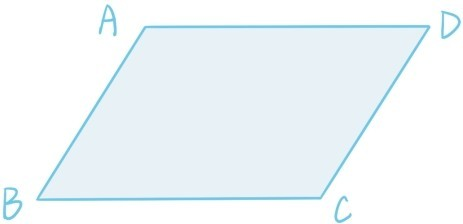

上一节中，利用向量代数运算（加法，数乘，内积），我们给出了余弦定理的一个非常简洁优美的证明。这一节，以两个平面几何定理的证明为例继续展示向量代数运算的威力。第一个定理就是第四章的定理6.8，我们用向量方法给出一个非常简洁的证明，读者可以与之前的辅助线证明做比较。
定理△ABC的3条高相交于一点。

证明：假设以AC为底边的高和以BC为底边的高相交于点P。只需证明AB与CP垂直即可。令，，则。因为BC垂直AP，AC垂直BP，所以，，由这两个等式直接推出，即。所以AB与CP垂直（证毕）。
接下来用向量方法给出第四章定理6.11的第4种证明，之前已经分别用辅助线方法，坐标方法，余弦定理给出了3种证明。
定理：平行四边形ABCD满足2AB2+2BC2=AC2+BD2。

证明：令，，则，。所以
（证毕）。
提问时间
7.5.1 用向量方法证明半圆或者直径所对的圆周角等于。
7.5.2 用向量方法证明平面四边形两组对边的平方和相等当且仅当对角线互相垂直，并思考这个结论和勾股定理的关联。